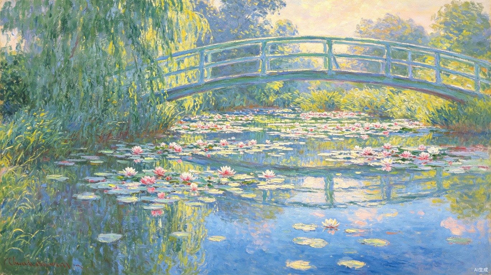

特别展览 SPECIAL EXHIBITION

莫奈
Claude Monet
光与色的诗人
The Poet of Light and Color
一八四零年至一九二六年，克劳德·莫奈用画笔追逐光影的足迹，将瞬间的自然之美凝固为永恒。从吉维尼花园的睡莲到印象黎明的晨雾，他的作品改变了世界对艺术的认知。
特别展览 SPECIAL EXHIBITION

Claude Monet
The Poet of Light and Color
一八四零年至一九二六年，克劳德·莫奈用画笔追逐光影的足迹，将瞬间的自然之美凝固为永恒。从吉维尼花园的睡莲到印象黎明的晨雾，他的作品改变了世界对艺术的认知。